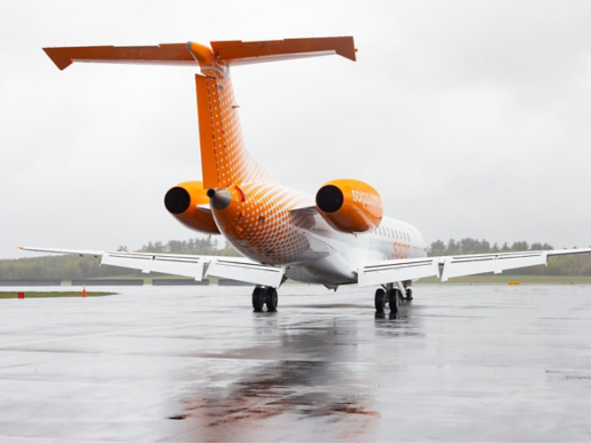
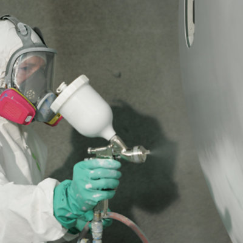
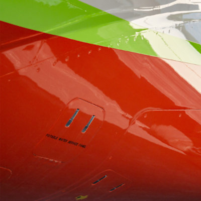
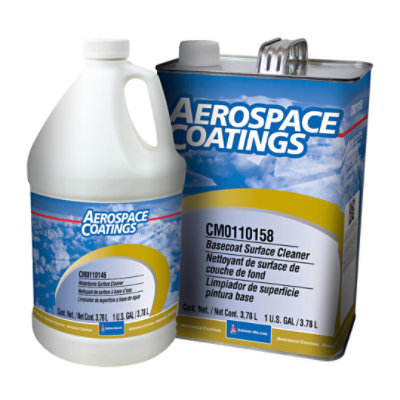
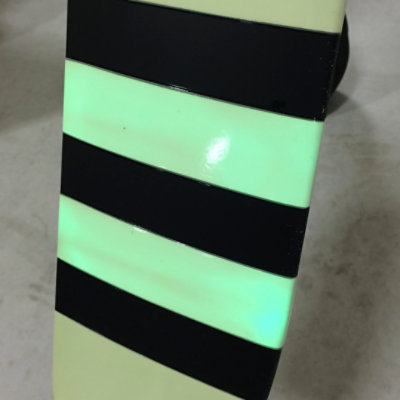
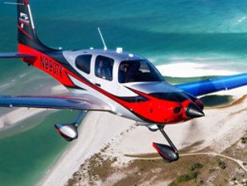
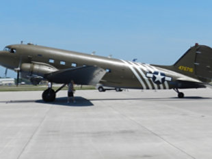
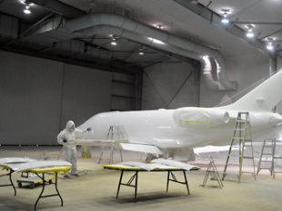
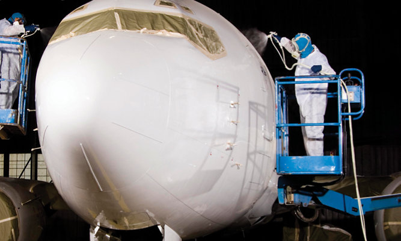
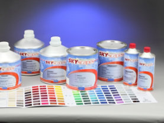

Whether commercial airline, regional jet or cargo carrier, Sherwin-Williams offers the ideal products for your airline livery. We excel at offering solutions that deliver color, performance and productivity for the aircraft cabin and exterior. The products range from pretreatments, corrosion resistant primers, fillers and surfacer for composites, flame-retardant cabin topcoats and high performing glossy topcoats.


Sherwin-Williams is a leading manufacturer of high quality aerospace primers for commercial airlines

Sherwin-Williams offers high performance polyester urethane and acrylic urethane commercial clearcoats designed for use over our basecoats on exterior surfaces.

Sherwin-Williams offers a variety of commercial cleaners from wipes to waterborne and basecoat cleaners, we have the solution for you.

Sherwin-Williams Photoluminescent Paint for commercial aviation is placed on the tips of the aircraft propeller blades and helicopter rotors, creating visibility in dark and low light operations as a safety precaution for nearby personnel in hangers, airstrips, helipads, and repair facilities.
Sherwin-Williams offers two-component chromated and vinyl wash commercial pre-treatments for simple mixing.
Sherwin-Williams is a leading manufacturer of high quality aerospace reducers for commercial aircraft.

We offer expertise for coating systems in any general aviation application - for both the aircraft exterior and cabin.

Qualified coating systems for any military aircraft application.

From pre-treatments to clearcoats, Sherwin-Williams is qualified for numerous aircraft manufacturers, parts manufacturers and approving bodies.


Product Lookup
Explore our product solutions for a variety of applications and aircraft types.
Ask Sherwin-Williams
Ask how Sherwin-Williams can bring the right products and expertise for your aircraft.